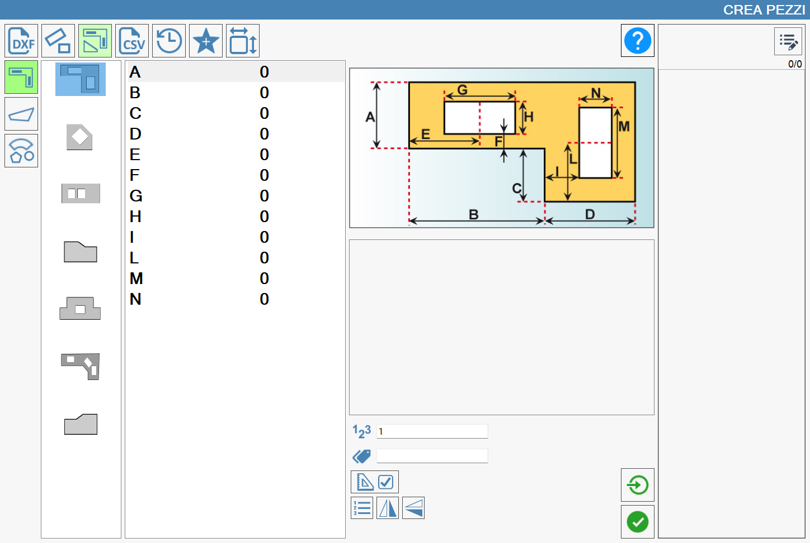
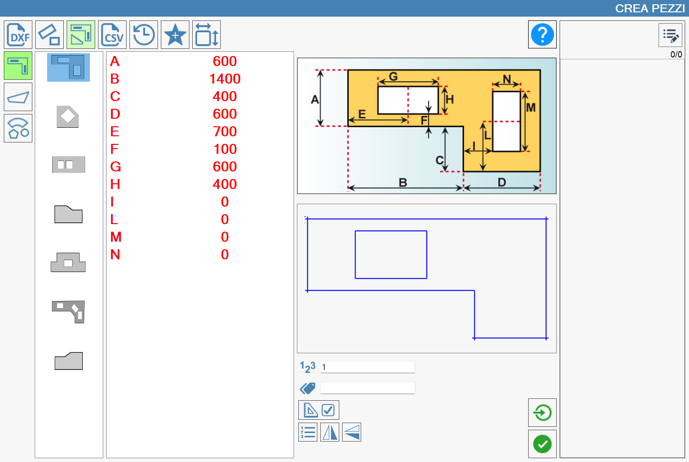
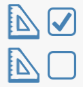
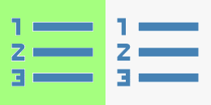
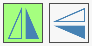
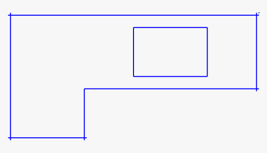
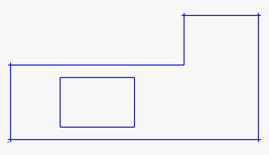
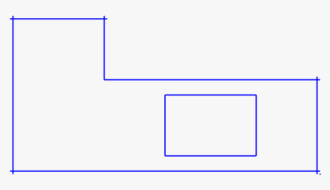

In this section, it is possible to build pieces using parametric figures with preset shape. To draw a figure, it is sufficient to insert the quotes that characterize it.

Categories of parametric figures
Referring to the above image, in the left column are represented the main categories of parametric shapes.
 | Kitchen tops |
 | Irregular tread |
Geometric Figures |
Preview and parameterized values
Based on the selection of the category, in the column just more to the right opens the choice of the correct shape to use.
Once the figure is decided, the fields to be completed with the measurements necessary for the creation of the piece are displayed. An image, placed in the center of the screen, will provide detailed instructions regarding the dimensions that must be entered. Below the reference image, a preview of the figure being drawn is displayed, which is modified in real time following each modification made on the values that characterize the designated figure.
In the following image you can see an example of create of a kitchen top.
As you can note, once the required measurements are inserted, they color in red, while in the starting situation they were in black color.
As in the previous paragraphs, once completed the insertion of the measures it is possible to insert the brand (or label) that is visualized on the piece when it is inserted in the work area, the number of copies of the piece, and decide if to execute the single import.

Additional Machine settings
Additional parameters
For the creation of rectangular pieces the following data are required:
 | Pieces Number |
 | Mark |
Additional buttons
 | Activate/Deactivate OUT SQUARE |
 | Single importing |
 | Mirror |
Pieces OUT SQUARE
Some pieces have the possibility of being built using angles not in square (that is different from 90 degrees).
When this function is enabled, further measurements are required to allow the program to calculate the angles of the piece. The input of these measures is, once again, guided by an image that replaces the previous one.
Below a sample of a piece out square.

NOTEThe additional measures for the construction of figures out of square are not necessary for the creation of the piece. By default they will always be equal to zero.
Mirror
By pressing the two dedicated buttons, it is possible to flip the displayed result on screen, respectively along the vertical or horizontal axis. This functionality allows to adapt the viewing based on the operating needs or the type of working in progress.
The following are proposed some examples of horizontal and vertical overturning:
Only Horizontal overturn | Only overturning Vertical | Horizontal and Vertical flipping |
 |  |  |
 |  |  |